Information content programming exercise.
In addition to building on your programming skills, this exercise tests your understanding of the entropy concepts that have been covered in class.
The goal of the exercise is to write a Python program that does the following (grading shown in red italics ):
- Read in a multiple sequence alignment in Stockholm format (you may assume the file is correctly formatted); (10)
Relevant points of the Stockholm format for this homework:
- Lines starting with #'s are comments, and should be ignored
- The amount of whitespace between fields is arbitrary
- On lines with information, you have optional whitespace, name, whitespace, sequence
- Gaps may be specified as a period (
. ) or a dash ( - )
- You can assume that the entire sequence is presented on a single line, instead of split over multiple lines (though they can technically legally be split in Stockholm format).
- The relevant part of the file ends with
//
- For each column 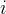 in the alignment:
- Calculate the probability distribution, 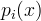, that a randomly selected row contains character 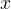 in column ; (10)
- (Note that "character" can include gap characters as well as the four RNA nucleotides)
- Calculate the entropy, 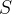, of this probability distribution. (10)
- For each ordered pair of column indices 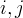 where 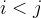:
- Calculate the joint probability distribution, 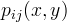, that a randomly selected row contains character in column and character 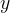 in column 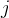 ; (10)
- Calculate the mutual information 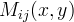. (10)
Do not print any of the information you just calculated in your final submission (though you'll definitely want to while debugging!). Instead, add the following functionality to your program:
- Store the generated entropy and mutual information values for each column or pair of columns. (note: since you should not return 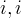 columns!)
- Use your results to output (you may assume there are at least 11 columns in the alignment):
- the "bottom 10" columns with the lowest entropy; (10)
- the "top 20" column-pairs with the highest mutual information; (5)
- the "top 50" column-pairs with the highest mutual information. (5)
- Execute the program on this alignment of RNA gene sequences:
- In a separate word processed document, to be turned in on the Wiki, comment on your results:
- What does a high mutual information imply about the nucleotides at positions and ? (10)
- With the aid of a sketch (may be hand drawn or computer generated), summarize what the "top 20" and "top 50" results tell you about the secondary structure of transfer RNA. (10)
Further notes regarding grading:
- As always, you will be graded for good programming style (see StyleGuidelines). (10)
- To summarize, you should turn in:
- Your code.
- Your analysis of the results.